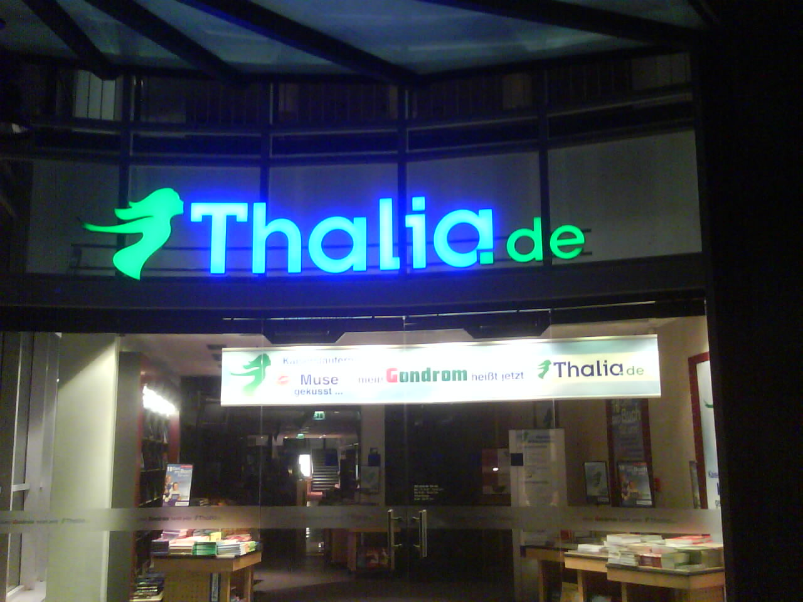

R.I.P. Gondrom & Lemon ist Barco
Schock! Die Bücherei Gondrom heisst jetzt Thalia! Wurde wohl letztes Jahr aufgekauft… und nicht genug Citron Lemon ist jetzt Barco. Aus gelb-weiss wird weiss-grau!? Ich bitte wieder um Erfahrungsberichte in den Comments. Thx.

Update: Klar, wie Stefan richtig sagt, es hiess nicht Citron sondern Lemon. Das Citrus gibt’s in good old Mainz. Hab ich schon immer verwechselt, sorry 😉

{kind=link}
Comment by Tobes
Friday, 30. Mar @ 15:38 117526910803Fri, 30 Mar 2007 15:38:28 +0100
P.S: http://www.barco-kl.de ist noch frei 😉
Comment by Luigi
Saturday, 31. Mar @ 00:06 117529959912Sat, 31 Mar 2007 00:06:39 +0100
Anruf beim Ticketservice von Thalia.de letzten Mitwoch: “Ticketservice der Bücherei Gondrom, ähmm Thalia … ach is auch egal” 🙂
Comment by Stefan
Saturday, 31. Mar @ 09:02 117533175209Sat, 31 Mar 2007 09:02:32 +0100
Hieß das Barco nicht vorher Lemon? Oder gab es dazwischen noch den Namen Citron?
Comment by Stefan
Saturday, 31. Mar @ 09:17 117533262009Sat, 31 Mar 2007 09:17:00 +0100
Bereits im letzten Jahr hieß es, dass Gondrom von DOUGLAS übernommen worden wäre … Thalia.de gehört min. (also offiziell) 75 % DOUGLAS (wer weiß wie die anderen 25 % noch “verstrickt” sind).
Die Gerüchte über DOUGLAS kennt man ja … ich weiß allerdings nicht, ob man das irgendwo auch bestätigt bekommt.
Comment by Anne
Sunday, 1. Apr @ 21:42 117546377409Sun, 01 Apr 2007 21:42:54 +0100
In Mainz heißt das aber im Übrigen Citrus und nicht Citron, wenn wir hier schon am verbessern sind! 🙂
Comment by Daniel
Tuesday, 16. Nov @ 18:08 128993090206Tue, 16 Nov 2010 18:08:22 +0100
haha, wie cool. war klar, das der klugscheißer-kommentar am 1.April geschrieben wurde. Ãœbrigens, ich ahb in meinem kommentar auch ein paar rechtschreibfehler versteckt – viel spaß beim suchen.